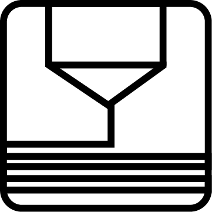

Matthieu Borgognon
CTO / Ingénieur en Microtechnique / Fab Manager
Disponibilité : début juillet 2018, partout en Suisse romande et Suisse alémanique.
Disponibilité : début juillet 2018, partout en Suisse romande et Suisse alémanique.
Responsable technique du Laboratoire de Fabrication (Fab Lab). Conception et animation de workshops sur la fabrication digitale, animation du Fab Lab (prototypage & utilisation machines), engineering consulting, gestion des stocks, gestion du parc machines, gestion des offres et devis, contact avec les clients. Conception et animation de formations (modélisation 3D, dessin 2D, fabrication CNC 5 axes, découpeuse Laser CO2, plotter de découpe Vinyl).
2015 -
Breitling Chronométrie SA, La Chaux-de-Fonds, Suisse
Management d'équipe (~10 pers.) et application des méthodologies Agiles dans l'horlogerie (Scrum, Kanban, Burndown Chart, etc.). Responsable de l'atelier du contrôle qualité (composants entrants). Mise en place d'un système d'Analyse Sensorielle (qualification esthétique objective des composants). Responsable du parc métrologique de l'entreprise (+1k unité) dont machines de mesures optiques (Marcel-Aubert) et tridimensionnelles (OGP). Supervision et expertise stagiaire de l'Ecole Polytechnique Fédérale de Lausanne (Thèse de Master EPFL : "Optimisation De La Mesure Tridimensionnelle Pour Les Pièces Horlogères"). Mise en place d'un serveur pour la gestion collaborative du savoir (type wiki) et gestion de bugs en métrologie interne à l'entreprise.
2015 - 2017
Fabrique d'Objets Libres, Lyon
Gestion de projet & développement de machines spéciales (Réglage, Assortiments, SAV, T0-T1-T2, etc.). Analyse de flux, temps et coûts de fabrication - ROI. Programmation software (C, JAVA, R, VB, Assembleur pour commande EIP, GCode (ISO)) : post-traitement OGP, commande EIP, uControleurs, etc. Conception électronique (sécurité machine, éclairage embarqué, commande moteur, etc.). Assistance à la production pour l'amélioration des procédés, dépannages et mise en train (mécanique, électronique et informatique). Acquisition et suivi des projets d'automation (interne / externe). Engineering management et mise en place de documents Qualité.
2012 - 2015
 Office Suite (LibreOffice / GSuite / Microsoft Office)
Office Suite (LibreOffice / GSuite / Microsoft Office)
Photo editing (GIMP / Photoshop)
Vector graphics (Inkscape / Illustrator)
 Video production (Open Broadcaster Software)
Video production (Open Broadcaster Software)
 Video editing (Kdenlive / Libav)
Video editing (Kdenlive / Libav)
 Coding (OOP) (C++ / JAVA / Python)
Coding (OOP) (C++ / JAVA / Python)
Web development (HTML5 / CSS3 / JavaScript)
CAD Modeling (FreeCAD / Inventor / UGS NX / Fusion360 / Onshape)
 CAM Modeling (Fusion360 / AlphaCAM)
CAM Modeling (Fusion360 / AlphaCAM)
 3D printing FDM
 Laser cutting CO2
Laser cutting CO2
3D scanning
 Embeded system
Embeded system
CNC milling
Textile
Vinyl cutting
Posture réflexive et technique dans le cadre du développement local - acteurs, publics,financements, etc
2015
Sociologie, posture réflexive, éléments d'analyses et d'enquêtes
2012
Lycée Pablo Neruda - St Martin d'Hères (Isère)
Electricité de puissance dans le domaine industriel
2009
Ce système modulaire est facile à fabriquer, basé sur une grille de référence. Je l'ai adapté à des moteurs électriques, batteries, Arduino, etc. C'est une base à partir de laquelle il est facile de monter un atelier pour les petits comme pour les grands.
Un de mes projet en cours de conception. Ce grappin est programmable, avec une interface simplifiée pour des animation ou via une librairie pour les programmeurs. Il permet de faire de nombreuses animations avec un aspect ludique (gamification) : si l'exectice est réussi, on gage un objet récupéré par le grappin.
J'ai eu l'occasion de monter et d'animer de nombreux ateliers pour différents publics (pro ou grand public) avec des activités ou des démos.
J'ai pu faire l'aménagement du camion, gestion des clients, devis, déplacements et animations sur place sur une demi journée ou plusieurs jours.
Plus rapide et maniable, ce petit robot à roues est une version dérivée du robot brosse. Il sert à l'apprentissage des bases de la programmation pour les enfants.
Dans le cadre d'un atelier pour enfants, ce robot-brosse peut etre personnalisé avec des élémenst découpés à la laser, il est programmable via un Arduino intégré.